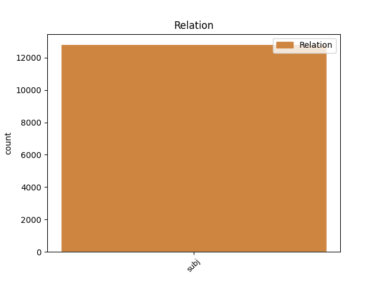
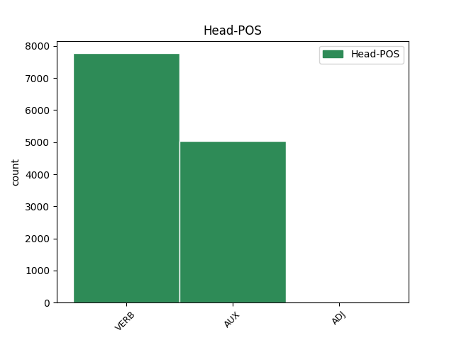
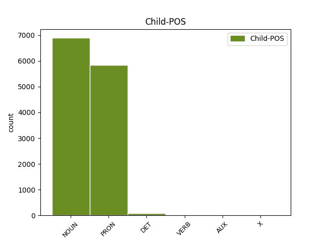

Distribution of features within this leaf



Agreement Rules sorted by frequency.
- When the dependent token is the subject(subj) of the head token, and the dependent token is NOUN.
1 Selon _ _ _ _ 0 _ _ _
2 une _ _ _ _ 0 _ _ _
3 première _ _ _ _ 0 _ _ _
4 hypothèse _ _ _ _ 0 _ _ _
5 , _ _ _ _ 0 _ _ _
6 l' _ _ _ _ 0 _ _ _
7 origine origine NOUN _ Gender=Fem|Number=Sing 8 subj _ _
8 est être AUX _ Mood=Ind|Number=Sing|Person=3|Tense=Pres|VerbForm=Fin 0 _ _ _
9 issue _ _ _ _ 0 _ _ _
10 de _ _ _ _ 0 _ _ _
11 l' _ _ _ _ 0 _ _ _
12 appelatif _ _ _ _ 0 _ _ _
13 gaulois _ _ _ _ 0 _ _ _
14 alpe _ _ _ _ 0 _ _ _
15 , _ _ _ _ 0 _ _ _
16 lui-même _ _ _ _ 0 _ _ _
17 issu _ _ _ _ 0 _ _ _
18 d' _ _ _ _ 0 _ _ _
19 une _ _ _ _ 0 _ _ _
20 racine _ _ _ _ 0 _ _ _
21 celtique _ _ _ _ 0 _ _ _
22 ou _ _ _ _ 0 _ _ _
23 pré-celtique _ _ _ _ 0 _ _ _
24 alp _ _ _ _ 0 _ _ _
25 qui _ _ _ _ 0 _ _ _
26 viendrait _ _ _ _ 0 _ _ _
27 dalbos _ _ _ _ 0 _ _ _
28 signifiant _ _ _ _ 0 _ _ _
29 selon _ _ _ _ 0 _ _ _
30 Delamarre _ _ _ _ 0 _ _ _
31 « _ _ _ _ 0 _ _ _
32 le _ _ _ _ 0 _ _ _
33 monde _ _ _ _ 0 _ _ _
34 lumineux _ _ _ _ 0 _ _ _
35 , _ _ _ _ 0 _ _ _
36 le _ _ _ _ 0 _ _ _
37 monde _ _ _ _ 0 _ _ _
38 d' _ _ _ _ 0 _ _ _
39 en _ _ _ _ 0 _ _ _
40 haut _ _ _ _ 0 _ _ _
41 » _ _ _ _ 0 _ _ _
42 . _ _ _ _ 0 _ _ _
1 Ce _ _ _ _ 0 _ _ _
2 débutant _ _ _ _ 0 _ _ _
3 de _ _ _ _ 0 _ _ _
4 l' _ _ _ _ 0 _ _ _
5 année _ _ _ _ 0 _ _ _
6 1983 _ _ _ _ 0 _ _ _
7 et _ _ _ _ 0 _ _ _
8 double _ _ _ _ 0 _ _ _
9 All-Star _ _ _ _ 0 _ _ _
10 a _ _ _ _ 0 _ _ _
11 effectué _ _ _ _ 0 _ _ _
12 7 _ _ _ _ 0 _ _ _
13 saisons _ _ _ _ 0 _ _ _
14 à _ _ _ _ 0 _ _ _
15 plus _ _ _ _ 0 _ _ _
16 de _ _ _ _ 0 _ _ _
17 20 _ _ _ _ 0 _ _ _
18 points _ _ _ _ 0 _ _ _
19 de _ _ _ _ 0 _ _ _
20 moyenne _ _ _ _ 0 _ _ _
21 par _ _ _ _ 0 _ _ _
22 match _ _ _ _ 0 _ _ _
23 et _ _ _ _ 0 _ _ _
24 fait _ _ _ _ 0 _ _ _
25 encore _ _ _ _ 0 _ _ _
26 aujourd'hui _ _ _ _ 0 _ _ _
27 partie _ _ _ _ 0 _ _ _
28 de _ _ _ _ 0 _ _ _
29 la _ _ _ _ 0 _ _ _
30 liste _ _ _ _ 0 _ _ _
31 de _ _ _ _ 0 _ _ _
32 les _ _ _ _ 0 _ _ _
33 50 _ _ _ _ 0 _ _ _
34 joueurs _ _ _ _ 0 _ _ _
35 les _ _ _ _ 0 _ _ _
36 plus _ _ _ _ 0 _ _ _
37 prolifiques _ _ _ _ 0 _ _ _
38 de _ _ _ _ 0 _ _ _
39 l' _ _ _ _ 0 _ _ _
40 histoire _ _ _ _ 0 _ _ _
41 de _ _ _ _ 0 _ _ _
42 la _ _ _ _ 0 _ _ _
43 ligue _ _ _ _ 0 _ _ _
44 ( _ _ _ _ 0 _ _ _
45 il il PRON _ Gender=Masc|Number=Sing|Person=3|PronType=Prs 46 subj _ _
46 était être VERB _ Mood=Ind|Number=Sing|Person=3|Tense=Imp|VerbForm=Fin 0 _ _ _
47 en _ _ _ _ 0 _ _ _
48 31 _ _ _ _ 0 _ _ _
49 position _ _ _ _ 0 _ _ _
50 à _ _ _ _ 0 _ _ _
51 le _ _ _ _ 0 _ _ _
52 moment _ _ _ _ 0 _ _ _
53 de _ _ _ _ 0 _ _ _
54 sa _ _ _ _ 0 _ _ _
55 retraite _ _ _ _ 0 _ _ _
56 sportive _ _ _ _ 0 _ _ _
57 ) _ _ _ _ 0 _ _ _
58 . _ _ _ _ 0 _ _ _
1 Pour _ _ _ _ 0 _ _ _
2 un _ _ _ _ 0 _ _ _
3 peu _ _ _ _ 0 _ _ _
4 , _ _ _ _ 0 _ _ _
5 l' l' DET _ Definite=Def|Number=Sing|PronType=Art 8 subj _ EXTPOS=PRON|SpaceAfter=No|Type=MWE
6 on _ _ _ _ 0 _ _ _
7 se _ _ _ _ 0 _ _ _
8 croirait croire VERB _ Mood=Cnd|Number=Sing|Person=3|Tense=Pres|VerbForm=Fin 0 _ _ _
9 revenu _ _ _ _ 0 _ _ _
10 dans _ _ _ _ 0 _ _ _
11 les _ _ _ _ 0 _ _ _
12 années _ _ _ _ 0 _ _ _
13 50-60 _ _ _ _ 0 _ _ _
14 , _ _ _ _ 0 _ _ _
15 à _ _ _ _ 0 _ _ _
16 le _ _ _ _ 0 _ _ _
17 plus _ _ _ _ 0 _ _ _
18 fort _ _ _ _ 0 _ _ _
19 de _ _ _ _ 0 _ _ _
20 les _ _ _ _ 0 _ _ _
21 mouvements _ _ _ _ 0 _ _ _
22 de _ _ _ _ 0 _ _ _
23 libération _ _ _ _ 0 _ _ _
24 nationale _ _ _ _ 0 _ _ _
25 en _ _ _ _ 0 _ _ _
26 Afrique _ _ _ _ 0 _ _ _
27 et _ _ _ _ 0 _ _ _
28 dans _ _ _ _ 0 _ _ _
29 le _ _ _ _ 0 _ _ _
30 monde _ _ _ _ 0 _ _ _
31 . _ _ _ _ 0 _ _ _
1 Le _ _ _ _ 0 _ _ _
2 dénommé dénommer VERB _ Gender=Masc|Number=Sing|Tense=Past|VerbForm=Part 7 subj _ _
3 « _ _ _ _ 0 _ _ _
4 Ahmed _ _ _ _ 0 _ _ _
5 Daoudi _ _ _ _ 0 _ _ _
6 » _ _ _ _ 0 _ _ _
7 a avoir VERB _ Mood=Ind|Number=Sing|Person=3|Tense=Pres|VerbForm=Fin 0 _ _ _
8 de _ _ _ _ 0 _ _ _
9 multiples _ _ _ _ 0 _ _ _
10 antécédents _ _ _ _ 0 _ _ _
11 judiciaires _ _ _ _ 0 _ _ _
12 . _ _ _ _ 0 _ _ _
1 C' _ _ _ _ 0 _ _ _
2 est être AUX _ Mood=Ind|Number=Sing|Person=3|Tense=Pres|VerbForm=Fin 6 subj _ EXTPOS=PROPN|Type=Title
3 de _ _ _ _ 0 _ _ _
4 l' _ _ _ _ 0 _ _ _
5 or _ _ _ _ 0 _ _ _
6 est être AUX _ Mood=Ind|Number=Sing|Person=3|Tense=Pres|VerbForm=Fin 0 _ _ _
7 le _ _ _ _ 0 _ _ _
8 troisième _ _ _ _ 0 _ _ _
9 extrait _ _ _ _ 0 _ _ _
10 de _ _ _ _ 0 _ _ _
11 le _ _ _ _ 0 _ _ _
12 second _ _ _ _ 0 _ _ _
13 album _ _ _ _ 0 _ _ _
14 de _ _ _ _ 0 _ _ _
15 Jenifer _ _ _ _ 0 _ _ _
16 intitulé _ _ _ _ 0 _ _ _
17 Le _ _ _ _ 0 _ _ _
18 Passage _ _ _ _ 0 _ _ _
19 . _ _ _ _ 0 _ _ _
Disagree Examples:
1 L' _ _ _ _ 0 _ _ _
2 A887 A887 NOUN _ Gender=Fem|Number=Sing 6 subj _ _
3 et _ _ _ _ 0 _ _ _
4 l' _ _ _ _ 0 _ _ _
5 A87 _ _ _ _ 0 _ _ _
6 traversent traverser VERB _ Mood=Ind|Number=Plur|Person=3|Tense=Pres|VerbForm=Fin 0 _ _ _
7 Glenmoriston _ _ _ _ 0 _ _ _
8 . _ _ _ _ 0 _ _ _
1 Ironiquement _ _ _ _ 0 _ _ _
2 , _ _ _ _ 0 _ _ _
3 Trois _ _ _ _ 0 _ _ _
4 morceaux morceau NOUN _ Gender=Masc|Number=Plur 9 subj _ _
5 en _ _ _ _ 0 _ _ _
6 forme _ _ _ _ 0 _ _ _
7 de _ _ _ _ 0 _ _ _
8 poire _ _ _ _ 0 _ _ _
9 comporte comporter VERB _ Mood=Ind|Number=Sing|Person=3|Tense=Pres|Typo=Yes|VerbForm=Fin 0 _ _ _
10 sept _ _ _ _ 0 _ _ _
11 mouvements _ _ _ _ 0 _ _ _
12 . _ _ _ _ 0 _ _ _
1 Toujours _ _ _ _ 0 _ _ _
2 en _ _ _ _ 0 _ _ _
3 Géométrie _ _ _ _ 0 _ _ _
4 euclidienne _ _ _ _ 0 _ _ _
5 , _ _ _ _ 0 _ _ _
6 on _ _ _ _ 0 _ _ _
7 montre _ _ _ _ 0 _ _ _
8 que _ _ _ _ 0 _ _ _
9 dans _ _ _ _ 0 _ _ _
10 un _ _ _ _ 0 _ _ _
11 triangle _ _ _ _ 0 _ _ _
12 , _ _ _ _ 0 _ _ _
13 le _ _ _ _ 0 _ _ _
14 centre centre NOUN _ Gender=Masc|Number=Sing 40 subj _ _
15 de _ _ _ _ 0 _ _ _
16 gravité _ _ _ _ 0 _ _ _
17 G _ _ _ _ 0 _ _ _
18 , _ _ _ _ 0 _ _ _
19 l' _ _ _ _ 0 _ _ _
20 orthocentre _ _ _ _ 0 _ _ _
21 H _ _ _ _ 0 _ _ _
22 , _ _ _ _ 0 _ _ _
23 le _ _ _ _ 0 _ _ _
24 centre _ _ _ _ 0 _ _ _
25 de _ _ _ _ 0 _ _ _
26 le _ _ _ _ 0 _ _ _
27 cercle _ _ _ _ 0 _ _ _
28 circonscrit _ _ _ _ 0 _ _ _
29 Ω _ _ _ _ 0 _ _ _
30 , _ _ _ _ 0 _ _ _
31 et _ _ _ _ 0 _ _ _
32 le _ _ _ _ 0 _ _ _
33 centre _ _ _ _ 0 _ _ _
34 de _ _ _ _ 0 _ _ _
35 le _ _ _ _ 0 _ _ _
36 cercle _ _ _ _ 0 _ _ _
37 d' _ _ _ _ 0 _ _ _
38 Euler _ _ _ _ 0 _ _ _
39 E _ _ _ _ 0 _ _ _
40 sont être AUX _ Mood=Ind|Number=Plur|Person=3|Tense=Pres|VerbForm=Fin 0 _ _ _
41 tous _ _ _ _ 0 _ _ _
42 les _ _ _ _ 0 _ _ _
43 quatre _ _ _ _ 0 _ _ _
44 alignés _ _ _ _ 0 _ _ _
45 sur _ _ _ _ 0 _ _ _
46 une _ _ _ _ 0 _ _ _
47 droite _ _ _ _ 0 _ _ _
48 dite _ _ _ _ 0 _ _ _
49 droite _ _ _ _ 0 _ _ _
50 d' _ _ _ _ 0 _ _ _
51 Euler _ _ _ _ 0 _ _ _
52 de _ _ _ _ 0 _ _ _
53 le _ _ _ _ 0 _ _ _
54 triangle _ _ _ _ 0 _ _ _
55 , _ _ _ _ 0 _ _ _
56 de _ _ _ _ 0 _ _ _
57 plus _ _ _ _ 0 _ _ _
58 ils _ _ _ _ 0 _ _ _
59 sont _ _ _ _ 0 _ _ _
60 en _ _ _ _ 0 _ _ _
61 division _ _ _ _ 0 _ _ _
62 harmonique _ _ _ _ 0 _ _ _
63 ( _ _ _ _ 0 _ _ _
64 dans _ _ _ _ 0 _ _ _
65 cet _ _ _ _ 0 _ _ _
66 ordre _ _ _ _ 0 _ _ _
67 ) _ _ _ _ 0 _ _ _
68 . _ _ _ _ 0 _ _ _
1 Bien _ _ _ _ 0 _ _ _
2 évidemment _ _ _ _ 0 _ _ _
3 tous _ _ _ _ 0 _ _ _
4 les _ _ _ _ 0 _ _ _
5 matériaux _ _ _ _ 0 _ _ _
6 de _ _ _ _ 0 _ _ _
7 valeur _ _ _ _ 0 _ _ _
8 avaient _ _ _ _ 0 _ _ _
9 été _ _ _ _ 0 _ _ _
10 prélevés _ _ _ _ 0 _ _ _
11 depuis _ _ _ _ 0 _ _ _
12 longtemps _ _ _ _ 0 _ _ _
13 , _ _ _ _ 0 _ _ _
14 cependant _ _ _ _ 0 _ _ _
15 un _ _ _ _ 0 _ _ _
16 certain _ _ _ _ 0 _ _ _
17 nombre nombre NOUN _ Gender=Masc|Number=Sing 30 subj _ _
18 d' _ _ _ _ 0 _ _ _
19 artefacts _ _ _ _ 0 _ _ _
20 caractéristiques _ _ _ _ 0 _ _ _
21 de _ _ _ _ 0 _ _ _
22 le _ _ _ _ 0 _ _ _
23 viatique _ _ _ _ 0 _ _ _
24 funéraire _ _ _ _ 0 _ _ _
25 royal _ _ _ _ 0 _ _ _
26 de _ _ _ _ 0 _ _ _
27 la _ _ _ _ 0 _ _ _
28 XVIIIe _ _ _ _ 0 _ _ _
29 dynastie _ _ _ _ 0 _ _ _
30 ont avoir AUX _ Mood=Ind|Number=Plur|Person=3|Tense=Pres|VerbForm=Fin 0 _ _ _
31 pu _ _ _ _ 0 _ _ _
32 être _ _ _ _ 0 _ _ _
33 retrouvés _ _ _ _ 0 _ _ _
34 et _ _ _ _ 0 _ _ _
35 dont _ _ _ _ 0 _ _ _
36 le _ _ _ _ 0 _ _ _
37 tombeau _ _ _ _ 0 _ _ _
38 de _ _ _ _ 0 _ _ _
39 Toutânkhamon _ _ _ _ 0 _ _ _
40 livrera _ _ _ _ 0 _ _ _
41 plus _ _ _ _ 0 _ _ _
42 tard _ _ _ _ 0 _ _ _
43 un _ _ _ _ 0 _ _ _
44 ensemble _ _ _ _ 0 _ _ _
45 quasi _ _ _ _ 0 _ _ _
46 complet _ _ _ _ 0 _ _ _
47 . _ _ _ _ 0 _ _ _
1 Le _ _ _ _ 0 _ _ _
2 titre _ _ _ _ 0 _ _ _
3 de _ _ _ _ 0 _ _ _
4 le _ _ _ _ 0 _ _ _
5 jeu _ _ _ _ 0 _ _ _
6 est _ _ _ _ 0 _ _ _
7 une _ _ _ _ 0 _ _ _
8 référence _ _ _ _ 0 _ _ _
9 à _ _ _ _ 0 _ _ _
10 le _ _ _ _ 0 _ _ _
11 film _ _ _ _ 0 _ _ _
12 Clash _ _ _ _ 0 _ _ _
13 of _ _ _ _ 0 _ _ _
14 the _ _ _ _ 0 _ _ _
15 Titans _ _ _ _ 0 _ _ _
16 , _ _ _ _ 0 _ _ _
17 et _ _ _ _ 0 _ _ _
18 la _ _ _ _ 0 _ _ _
19 majorité majorité NOUN _ Gender=Fem|Number=Sing 26 subj _ _
20 de _ _ _ _ 0 _ _ _
21 les _ _ _ _ 0 _ _ _
22 noms _ _ _ _ 0 _ _ _
23 de _ _ _ _ 0 _ _ _
24 les _ _ _ _ 0 _ _ _
25 niveaux _ _ _ _ 0 _ _ _
26 comprennent comprendre VERB _ Mood=Ind|Number=Plur|Person=3|Tense=Pres|VerbForm=Fin 0 _ _ _
27 des _ _ _ _ 0 _ _ _
28 références _ _ _ _ 0 _ _ _
29 cinématographiques _ _ _ _ 0 _ _ _
30 . _ _ _ _ 0 _ _ _